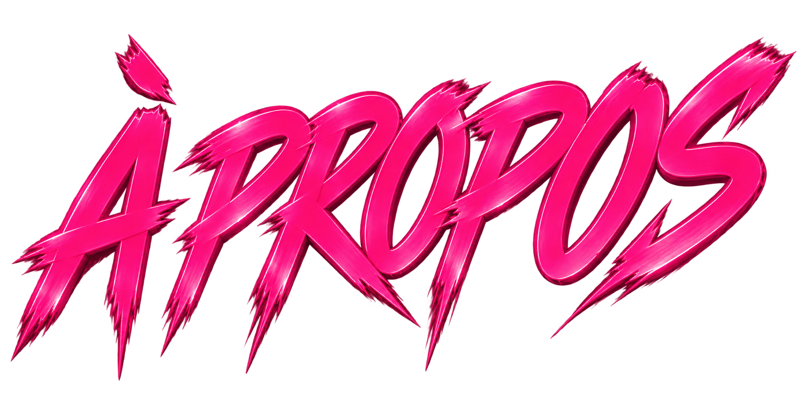

LGA / ÉPISODE 1
PLUS QU’UN ARTISTE,
UNE VISION.
LGA est un artiste indépendant qui transforme ses expériences en musique. À travers des sons mêlant émotion, ambition et réalité, il raconte une histoire sincère, sans filtre.
LGA / Épisode 1 marque le début d’un univers plus grand : une vision, un état d’esprit, une nouvelle génération.
Ici, tout est authentique. Musique, image, message : chaque détail compte.
« MÊME MASQUÉ,
LA VISION RESTE
LA MÊME »
LA VISION RESTE
LA MÊME »